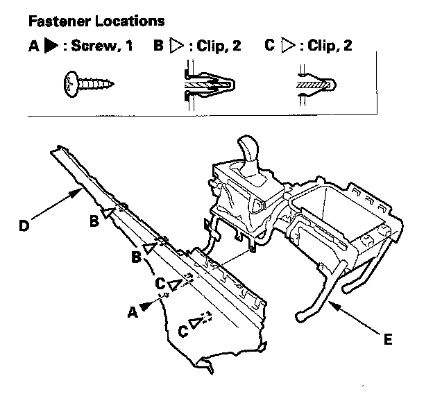
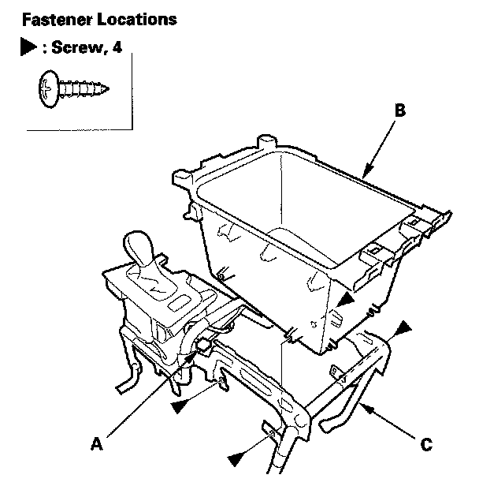

Center Console Box
Center Console Box ReplacementSpecial Tools Required
KTC trim tool set SOJATP2014
* Available through the American Honda Tool and Equipment Program
NOTE:
- Take care not to scratch the center console.
- Use the appropriate tool from the KTC trim tool set to avoid damage when removing components.
1. Remove the center console.
2. Remove the beverage holder and passenger's console panel as an assembly.

3. Remove the screw (A), and detach the clips (B, C) by pulling the driver's console panel (D) back, then remove if from the console frame (E).
4. Remove the Hands Free Link control unit

5. Remove the screws, and if equipped with rear entertainment system, disconnect the AC power outlet connector (A), then remove the center console box (B) from the console frame (C).
6. Install the box in the reverse order of removal, and note these items:
- If equipped, make sure the AC power outlet connector is plugged in properly.
- If the clips are damaged or stress-whitened, replace them with new ones.
- Push the clips into place securely.